산림기사 (2022-03-05 기출문제)
1과목: 조림학
1. 묘목 양성 시 해가림을 해 주어야 할 수종으로만 올바르게 나열한 것은?
- 주목, 소나무
- 전나무, 삼나무
- 밤나무, 은행나무
- 벚나무, 아까시나무
(정답률: 72%)

2. 산림에서 식물군락의 일정한 계열적 변화를 의미하는 것은?
- 식생교란
- 식생변이
- 식생순화
- 식생천이
(정답률: 77%)
3. 침엽수의 가지치기 작업방법으로 옳은 것은?
- 줄기와 직각이 되도록 잘라낸다.
- 으뜸가지 이상의 가지를 잘라낸다.
- 생장 휴지기에 실시하는 것이 좋다.
- 초두부까지 가지를 잘라내어 통직한 간재를 생산하도록 한다.
(정답률: 78%)
4. 대면적 산벌작업의 장점으로 옳지 않은 것은?
- 개벌작업 및 모수작업에 비해 갱신이 더 확실하다.
- 어린나무가 상하지 않고 적은 비용으로 작업할 수 있다.
- 우량임목들을 남겨 갱신되는 임분의 유전적 형질을 개량할 수 있다.
- 수령이 거의 비슷하고 줄기가 곧은 동령일제림으로 조성할 수 있다.
(정답률: 60%)
5. 간벌작업을 병행하여 실시하는 갱신작업종은?
- 개벌작업
- 왜림작업
- 택벌작업
- 모수림작업
(정답률: 69%)
6. 임목의 생육에 필요한 양분에 대한 설명으로 옳지 않은 것은?
- 황, 철, 붕소는 미량원소에 속한다.
- 침엽수는 활엽수보다 양분 요구도가 낮다.
- 토양 산도에 따라 무기영양소의 유용성이 달라진다.
- 성숙잎이 먼저 황화현상을 나타내는 것은 마그네슘 및 질소의 주요 결핍증상이다.
(정답률: 61%)
7. 종자를 정선한 후 곧바로 노천매장하는 것이 가장 적합한 수종은?
- Alnus japonica
- Pinus koraiensis
- Quercus acutissima
- Robina psudoacasia
(정답률: 50%)
8. 산림토양에서 집적층에 해당되는 층은?
- A층
- B층
- C층
- O층
(정답률: 72%)
9. 무성번식에 대한 설명으로 옳지 않은 것은?
- 초기생장 및 개화, 결실이 빠르다.
- 실생번식에 비해 기술이 필요하다.
- 번식방법으로는 삽목, 접목, 취목 등이 있다.
- 모수와는 다른 다양한 후계양성이 가능하다.
(정답률: 65%)
10. 종자의 활력을 검정하는 방법으로 옳지 않은 것은?
- 절단법
- 환원법
- 양건법
- X선 분석법
(정답률: 61%)
11. 다음 조건에 따른 파종량은?
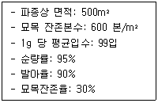
- 약 11.8kg
- 약 12.3kg
- 약 31.6kg
- 약 37.3kg
(정답률: 58%)
12. 우리나라의 소나무 중에서 수고가 높고, 줄기가 곧으며, 수관이 가늘고 좁고, 지하고가 높은 특성을 보이는 지역형은?
- 금강형
- 안강형
- 위봉형
- 중남부평지형
(정답률: 85%)
13. 침엽수에 해당하는 수종은?
- Abies koreana
- Bentula platyphylla
- Quercus mongolica
- Cornus controversa
(정답률: 73%)
14. 주로 종자에 의해 양성된 묘목으로 높은 수고를 가지면 성숙해서 열매를 맺게 되는 숲은?
- 왜림
- 중림
- 죽림
- 교림
(정답률: 82%)
15. 다음 설명에 해당하는 개벌방법은?
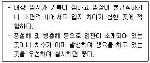
- 군상개벌
- 대면적개벌
- 연속대상개벌
- 교호대상개벌
(정답률: 50%)
16. 너도밤나무가 자연적으로 분포하고 있는 곳은?
- 홍도
- 제주도
- 강화도
- 울릉도
(정답률: 68%)
17. 일반적으로 수목의 광합성에 유효한 광파장 영역은?
- 0~200nm
- 200~400nm
- 400~700nm
- 700~1000nm
(정답률: 78%)
18. 풀베기 작업에 대한 설명으로 옳은 것은?
- 여름철보다 겨울철에 실시한다.
- 모두베기할 경우 조림목이 피압될 염려가 없다.
- 모두베기보다 둘레베기는 노동력이 많이 필요하다.
- 조림목이 양수수종인 경우 노동력이 더 많이 필요하다.
(정답률: 50%)
19. 어린나무가꾸기 작업에 대한 설명으로 옳은 것은?
- 병해충의 피해를 받은 임목만 벌채하는 것이다.
- 임분의 수직구조를 개선하기 위해 실시한다.
- 목적 이외의 수종이나 형질이 불량한 임목을 제거하는 것이다.
- 생육공간 확보를 위한 경쟁과정에서 생육공간 조절을 위하여 벌채하는 것이다.
(정답률: 52%)
20. 포플러류 등 건조에 약한 종자를 통풍이 잘 되는 옥내에 펴서 건조시키는 방법은?
- 인공건조법
- 양광건조법
- 자연건조법
- 반음건조법
(정답률: 66%)
2과목: 산림보호학
21. 소나무 재선충병을 방제하는 방법으로 옳지 않은 것은?
- 토양관주는 효과가 없어 실시하지 않는다.
- 아바멕틴 유제로 나무주사를 실시하여 방제한다.
- 피해목 내 매개충 구제를 위해 벌목한 피해목을 훈증한다.
- 나무주사는 수지 분비량이 적은 12~2월 사이에 실시하는 것이 좋다.
(정답률: 63%)
22. 병원체에 대한 설명으로 옳지 않은 것은?
- 흰가루병과 녹병균은 절대기생체이다.
- 바이러스나 파이토플라즈마는 부생체이다
- 죽은 식물의 유기물을 영양원으로 하여 살아가는 것을 부생체라 한다.
- 인공배양이 불가능하며 살아있는 기주조직 내에서만 증식하는 것을 절대기생체라 한다.
(정답률: 58%)
23. 수목병을 예방하기 위한 숲가꾸기 작업에 해당하지 않는 것은?
- 제벌
- 개벌
- 풀베기
- 가지치기
(정답률: 70%)
24. 솔껍질깍지벌레를 방제하는 방법으로 옳은 것은?
- 12월에 이미다클로프리드 분산성 액제를 수간에 주사한다.
- 피해목을 잘라 집재하고 비닐로 밀봉하여 메탐소듐 액제로 훈증한다.
- 성충 우화기인 5~6월에 뷰프로페진 액상수화제를 항공살포한다.
- 7월 이후 알을 구제하기 위하여 페니트로티온 유제를 수관에 살포한다.
(정답률: 36%)
25. 후식으로 인한 수목 피해를 주는 해충에 속하는 것은?
- 소나무좀
- 밤나무혹벌
- 미국흰불나방
- 오리나무잎벌레
(정답률: 51%)
26. 수목병의 표징에 해당하는 것은?
- 잣나무 줄기에 황색의 녹포자기가 생겼다.
- 소나무 잎이 5~6월에 누렇게 되면서 낙엽이 되었다.
- 벚나무 잎에 갈색의 반점이 형성되더니 구멍이 뚫렸다.
- 오동나무 잎이 작고 연한 녹색으로 되고 잔가지가 많이 발생했다.
(정답률: 59%)
27. 대추나무 빗자루병이 발병하는 원인이 되는 병원체는?
- 선충
- 진균
- 바이러스
- 파이토플라즈마
(정답률: 79%)
28. 리지나뿌리썩음병을 방제하는 방법으로 옳지 않은 것은?
- 피해 임지에 적정량의 석회를 뿌린다.
- 임지 내에서 불을 피우는 행위를 막는다.
- 매개충 구제를 위하여 살충제를 봄에 살포한다.
- 피해지 주변에 깊이 80 cm 정도의 도랑을 파서 피해 확산을 막는다.
(정답률: 60%)
29. 수목의 줄기를 주로 가해하는 해충은?
- 솔나방
- 박쥐나방
- 밤바구미
- 밤나무산누에나방
(정답률: 64%)
30. 미국흰불나방을 방제하는 방법으로 옳은 것은?
- 11~12월에 카보퓨란 입제를 지면에 살포한다.
- 5~9월에 유아등을 설치하여 유충을 유인한다.
- 피해가 심한 임지에서는 디노테퓨란 액제를 수간에 주입한다.
- 수피 사이에 고치를 짓고 월동한 번데기를 수시로 채집하여 소각한다.
(정답률: 53%)
31. 소나무좀에 대한 설명으로 옳지 않은 것은?
- 1년에 1회 발생하고 주로 봄과 여름에 가해한다.
- 암컷 성충은 수피를 뚫고 갱도를 만들면서 가해한다.
- 먹이나무를 설치하여 월동성충이 산란하게 한 후 소각하여 방제한다.
- 주로 쇠약목, 이식목, 병해충 피해목에 기생하지만, 벌채목에는 가해하지 않는다.
(정답률: 71%)
32. 산성비에 해당하는 pH 농도의 기준값은?
- pH 3.5 이하
- pH 4.6 이하
- pH 5.6 이하
- pH 6.5 이하
(정답률: 60%)
33. 모잘록병에 대한 설명으로 옳은 것은?
- 질소질 비료를 충분히 준 묘목은 발병률이 낮다.
- 토양의 물리적 성질과 발병과는 상관관계가 전혀 없다.
- 소나무류 묘목의 모잘록병은 겨울철에 발생이 심하다.
- 토양이 과습하지 않게 배수 관리를 잘 하여 발병률을 낮출 수 있다.
(정답률: 71%)
34. 고온에 의한 볕데기의 피해가 일어나기 쉬운 수종은?
- 소나무
- 굴참나무
- 오동나무
- 일본잎갈나무
(정답률: 56%)
35. 나무주사 방법에 대한 설명으로 옳지 않은 것은?
- 형성층 안쪽의 목부까지 구멍을 뚫어야 한다.
- 모젯(Mauget) 수간주사기는 압력식 주사이다.
- 중력식 주사는 약액의 농도가 낮거나 부피가 클 때 사용한다.
- 소나무류에는 압력식 주사보다는 주로 중력식 주사를 사용한다.
(정답률: 60%)
36. 다음 설명에 해당하는 해충은?
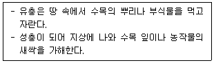
- 매미류
- 풍뎅이류
- 잎벌레류
- 하늘소류
(정답률: 47%)
37. 다음 중 내화력이 가장 약한 수종은?
- 삼나무
- 은행나무
- 졸참나무
- 사철나무
(정답률: 68%)
38. 잣나무 털녹병을 방제하는 방법으로 옳지 않은 것은?
- 중간기주인 송이풀을 제거한다.
- 저항성 품종을 육성하여 식재한다.
- 풀베기와 간벌을 실시하여 숲에 통풍을 양호하게 해준다.
- 담자포자 비산시기인 4월 하순부터 10일 간격으로 적용약제를 2~3회 살포한다.
(정답률: 37%)
39. 경제적 가해수준에 대한 설명으로 옳은 것은?
- 해충에 의한 피해액과 방제비가 같은 수준의 밀도
- 해충에 의한 피해액이 방제비보다 큰 수준의 밀도
- 해충에 의한 피해액이 방제비보다 작은 수준의 밀도
- 해충에 의한 경제적으로 큰 피해를 주는 수준의 밀도
(정답률: 61%)
40. 오동나무 빗자루병 예방을 위해 매개충인 담배장님노린재를 방제하는 시기로 가장 적절한 것은?
- 1~3월
- 4~6월
- 7~9월
- 10~12월
(정답률: 52%)
3과목: 임업경영학
41. 묘목을 심어 성림하기까지 지출되는 비용에 해당하는 항목은?
- 지대
- 조림비
- 채취비
- 관리비
(정답률: 65%)
42. 입목직경을 수고의 1/n 되는 곳의 직경과 같게 하여 정한 형수는?
- 정형수
- 수고형수
- 절대형수
- 흉고형수
(정답률: 65%)
43. 임업의 경제적 특성으로 옳지 않은 것은?
- 임업생산은 조방적이다.
- 자연조건의 영향을 많이 받는다.
- 육성임업과 채취임업이 병존한다.
- 원목가격의 구성요소 대부분이 운반비이다.
(정답률: 54%)
44. 원가계산을 위한 원가비교 방법으로 옳지 않은 것은?
- 기간비교
- 상호비교
- 표준실제비교
- 수익비용비교
(정답률: 53%)
45. 임업기계의 감가상각비(D)를 정액법으로 구하는 공식으로 옳은 것은? (단, P : 기계구입가격, S : 기계 폐기 시의 잔존가치, N: 기계의 수명)
- D=(P-S)/N
- D=(S-P)/N
- D=N/(S-P)
- D=N/(P-S)
(정답률: 59%)
46. 임목축적이 2010년 150m3, 2020년 220m3일 때 단리에 의한 생장률은?
- -4.7%
- -3.2%
- +3.2%
- +4.7%
(정답률: 40%)
47. 산림평가에서 전가계산식에 사용되는 요소가 아닌 것은?
- 환원율
- 할인율
- 전가계수
- 현재가계수
(정답률: 46%)
48. 유형고정자산의 감가 중에서 기능적 요인에 의한 감가에 해당되지 않는 것은?
- 부적응에 의한 감가
- 진부화에 의한 감가
- 경제적 요인에 의한 감가
- 마찰 및 부식에 의한 감가
(정답률: 52%)
49. 임목을 평가하는 방법에 대한 설명으로 옳은 것은?
- 유령림은 임목기망가로 평가한다.
- 장령림은 임목비용가로 평가한다.
- 벌기 이상의 성숙림은 시장가역산법으로 평가한다.
- 식재 직후의 임분은 원가수익절충법으로 평가한다.
(정답률: 62%)
50. 자연휴양림조성계획에 포함되는 사항이 아닌 것은?
- 산림경영계획
- 조성기간 및 연도별 투자계획
- 시설물의 종류 및 규모가 표시된 시설계획
- 축척 1:1000 임야도가 포함된 시설물 종합배치도
(정답률: 47%)
51. 각 계급의 흉고단면적 합계를 동일하게 하여 표준목을 선정한 후 전체 제적을 추정하는 방법은?
- 단급법
- Urich법
- Hartig법
- Draudt법
(정답률: 50%)
52. 다음 조건에 따라 Hundeshagen 이용율법으로 계산한 연간 벌채량은?
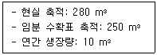
- 8.2 m3
- 8.9 m3
- 11.2 m3
- 11.5 m3
(정답률: 51%)
53. 산림에서 임목을 벌채하여 제재목을 생산할 때 부수적으로 톱밥이 생산되는데, 이러한 두 가지 생산물의 관계를 뭐라고 하는가?
- 결합생산
- 경합생산
- 보완생산
- 보합생산
(정답률: 54%)
54. 법정림의 춘계축적이 900 m3, 추계축적이 1100 m3이라 할 때 법정축적(m3)은?
- 200
- 1000
- 1100
- 2000
(정답률: 60%)
55. 임업소득을 계산하는 방법으로 옳은 것은?
- 자본에 귀속하는 소득 = 임업순수익 - (지대 + 자본이자)
- 가족노동에 귀속하는 소득 = 임업소득 - (지대 + 자본이자)
- 임지에 귀속하는 소득 = 임업소득 - (지대 + 가족노임추정액)
- 경영관리에 귀속하는 소득 = 임업소득 - (지대 + 가족노임추정액)
(정답률: 47%)
56. 다음 조건에 따라 후버(Huber)식에 의해 구한 원목 재적은?
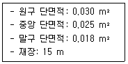
- 0.225 m3
- 0.360 m3
- 0.375 m3
- 0.450 m3
(정답률: 38%)
57. 임분 밀도의 척도에 해당하지 않는 것은?
- 입목도
- 지위지수
- 흉고단면적
- 상대공간지수
(정답률: 55%)
58. 산림경영패턴이 영구히 반복된다는 것을 가정한 임지의 평가방법은?
- 비용가법
- 환원가법
- 매매가법
- 기망가법
(정답률: 55%)
59. 수간석해를 할 때 반경은 보통 몇 년 단위로 측정하는가?
- 1년
- 3년
- 5년
- 10년
(정답률: 71%)
60. 임목축적에서 생장에 따른 분류가 아닌 것은?
- 정기생장
- 재적생장
- 형질생장
- 등귀생장
(정답률: 36%)
4과목: 임도공학
61. 종단측량 야장을 이용한 No.0 측점부터 No.4 측점까지의 기울기는? (단위: m, 측점간 거리: 20m)
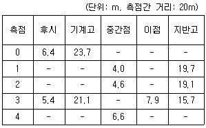
- -3.5%
- +3.5%
- +5.0%
- -5.0%
(정답률: 27%)
62. 토적 계산 방법으로 실제의 토적보다 다소 적게 나오지만 양단면평균법보다 오차가 작은 것은?
- 등고선법
- 각주공식
- 주상체공식
- 중앙단면적법
(정답률: 60%)
63. 중심선측량 및 영선측량에 대한 설명으로 옳지 않은 것은?
- 영선은 절토작업과 성토작업의 경계선이 되기도 한다.
- 영선측량은 지반고 상태에서 측량하며 종단면도 상에서 계획선을 결정한다.
- 지반의 기울기가 급할수록 영선보다 중심선이 안쪽에 위치한다.
- 중심선측량은 평면측량에서 중심선을 설정한 후 종단·횡단 측량을 한다.
(정답률: 31%)
64. 집재 및 운재 작업에서 가공본선으로 사용되는 와이어로프의 안전계수 기준은?
- 2.7 이상
- 4.0 이상
- 4.7 이상
- 6.0 이상
(정답률: 48%)
65. 임도의 평면곡선에 대한 설명으로 옳지 않은 것은?
- 복심곡선은 반지름이 다른 곡선이 같은 방향으로 연속되는 곡선이다.
- 단곡선은 직선에 원호가 접속된 원곡선으로 설치가 용이하여 일반적으로 많이 사용된다.
- 배향곡선은 상반되는 방향의 곡선을 연속시킨 곡선으로 양호 사이에 직선부를 설치한다.
- 완화곡선은 임도의 직선으로부터 곡선부로 옮겨지는 곳에는 곡선부의 외쪽기울기와 나비넓힘이 원활하게 이어지도록 한다.
(정답률: 40%)
66. 임도의 노체에 대한 설명으로 옳지 않은 것은?
- 측구는 공법에 따라 토사도, 사리도, 쇄석도 등으로 구분한다.
- 임도의 노체는 일반적으로 노상, 노반, 기층 및 표층으로 구성된다.
- 노면에 가까울수록 큰 응력에 견디기 쉬운 재료를 사용하여야 한다.
- 통나무길 및 섶길은 저습지대에 있어서 노면의 침하를 방지하기 위하여 사용하는 것이다.
(정답률: 48%)
67. 임도 설계 시 횡단면도 작성에 사용하는 축적은?
- 1/100
- 1/200
- 1/1000
- 1/1200
(정답률: 55%)
68. 임도시공 시 부족한 토사의 공급을 위한 장소는?
- 객토장
- 토취장
- 사토장
- 집재장
(정답률: 70%)
69. 1:25000 지형도에서 도상거리가 8 cm일 때 실제 지상거리는 몇 km인가?
- 0.2
- 2
- 8
- 20
(정답률: 54%)
70. 임도 교량에 영향을 주는 활하중에 해당하는 것은?
- 주보의 무게
- 바닥 틀의 무게
- 교량 시설물의 무게
- 통행하는 트럭의 무게
(정답률: 69%)
71. 임도설계 시 각 측점의 단면마다 절토고, 성토고 및 지장목 제거, 측구터파기 단면적 등의 물량을 기입하는 설계도는?
- 평면도
- 종단면도
- 횡단면도
- 구조물도
(정답률: 59%)
72. 일반적인 지형 조건에서 임도의 길어깨 및 옆도랑 너비 기준은?
- 각각 20~30 cm
- 각각 30~50 cm
- 각각 50~100 cm
- 각각 100~150 cm
(정답률: 49%)
73. 급경사의 긴 비탈면인 산지에서는 지그재그 방식, 완경사지에서는 대각선방식이 가장 적합한 임도의 종류는?
- 계곡임도
- 사면임도
- 능선임도
- 산정임도
(정답률: 57%)
74. 적정지선 임도간격이 500 m일 때 적정지선 임도밀도(m/ha)는?
- 20
- 25
- 50
- 200
(정답률: 41%)
75. 우수한 목재 재질 및 노동 사정을 고려할 때 가장 적합한 벌목 시기는?
- 봄
- 여름
- 가을
- 겨울
(정답률: 53%)
76. 임도망 계획 시 고려 사항으로 옳지 않은 것은?
- 신속한 운반이 되도록 한다.
- 운재비가 적게 들도록 한다.
- 운재방법이 단일화되도록 한다.
- 운반량의 상한선을 두어야 한다.
(정답률: 50%)
77. 측선거리가 100 m, 방위각이 120°일 때, 위거 및 경거의 값은? (단, cos60°=0.5, sin60°=0.86)
- 위거 +50m, 경거 +86m
- 위거 -50m, 경거 +86m
- 위거 +50m, 경거 -86m
- 위거 -50m, 경거 -86m
(정답률: 34%)
78. 임도의 적정 종단기울기를 결정하는 요인으로 가장 거리가 먼 것은?
- 노면 배수를 고려한다.
- 적정한 임도우회율을 설정한다.
- 주행 차량의 회전을 원활하게 한다.
- 주행차량의 등판력과 속도를 고려한다.
(정답률: 54%)
79. 임도 시공 시 충분히 다진 후 5 m 미만으로 흙쌓기 비탈면을 설치할 때 기울기 기준은?
- 1 : 0.3 ~ 0.8
- 1 : 0.5 ~ 1.2
- 1 : 0.8 ~ 1.5
- 1 : 1.2 ~ 2.0
(정답률: 35%)
80. 임도에서 노면과 차량의 마찰계수가 0.15, 노면의 횡단물매는 5%, 설계속도가 20 km/h일 때 곡선의 반지름은?
- 약 4 m
- 약 8 m
- 약 16 m
- 약 20 m
(정답률: 36%)
5과목: 사방공학
81. 불투과형 중력식 사방댐의 시공요령으로 옳지 않은 것은?
- 방수로 양옆의 기준 기울기는 1:1이다.
- 방수로는 보통 정사각형 모양으로 한다.
- 계상의 양안애 암반이 있는 지역이 시공적지이다.
- 찰쌓기댐을 시공할 때 3 m2당 1개의 배수구를 설치한다.
(정답률: 50%)
82. 돌흙막이공을 계획할 때 높이 기준은?
- 찰쌓기 2.5m 이하, 메쌓기 1.5m 이하
- 찰쌓기 3.0m 이하, 메쌓기 2.0m 이하
- 찰쌓기 3.5m 이하, 메쌓기 2.5m 이하
- 찰쌓기 4.0m 이하, 메쌓기 3.0m 이하
(정답률: 52%)
83. 불투과형 중력식 사방댐의 형태인 흙댐의 시공요령으로 내심벽을 만들 때 사용하는 것은?
- 모래
- 자갈
- 점토
- 호박돌
(정답률: 54%)
84. 다음 조건에 따른 비탈다듬기공사에서 발생한 토사량(m3)은?
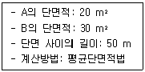
- 125
- 500
- 1250
- 2500
(정답률: 59%)
85. 해안사방에서 식재목의 생육환경 조성을 위하여 후방에 풍속을 약화시키고 모래의 이동을 막는 목적으로 시공하는 것은?
- 모래덮기
- 퇴사울세우기
- 사지식수공법
- 정사울세우기
(정답률: 58%)
86. 다음 설명에 해당하는 것은?
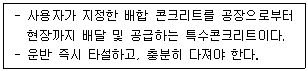
- AE콘크리트
- 프리팩트콘크리트
- 레디믹스콘크리트
- 뿜어붙이기콘크리트
(정답률: 58%)
87. 강우 및 토양침식능인자, 경사장 및 경사도인자, 작물경작인자, 침식조절관행인자를 이용하여 연간토사유출량을 추정하는 방법은?
- 부유사량 측정에 의한 방법
- 하천 퇴적량 측정에 의한 방법
- 만능토양유실량식에 의한 방법
- 총유실량과 유사운송비 계산에 의한 방법
(정답률: 40%)
88. 계단 연장이 3 km인 비탈면에 선떼붙이기를 7급으로 할 때에 필요한 떼의 총 소요 매수는? (단, 떼의 크기: 40 cm × 25 cm)
- 11250매
- 15000매
- 16500매
- 18750매
(정답률: 47%)
89. 돌쌓기벽 그림에서 A의 명칭은?
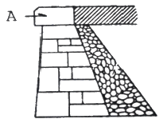
- 갓돌
- 귀돌
- 모서리돌
- 뒷채움돌
(정답률: 68%)
90. 사방사업 대상지로 가장 거리가 먼 것은?
- 임도가 미개설되어 접근이 어려운 지역
- 산불 등으로 산지의 피복이 훼손된 지역
- 황폐가 예상되는 산지와 계천으로 복구공사가 필요한 지역
- 해일 및 풍랑 등 재해예방을 위해 해안림 조성이 필요한 지역
(정답률: 66%)
91. 빗물에 의한 침식의 발달과정에서 가장 초기상태의 침식은?
- 우격침식
- 구곡침식
- 누구침식
- 면상침식
(정답률: 68%)
92. 산지의 침식형태 중 중력에 의한 침식에 해당되지 않는 것은?
- 산붕
- 포락
- 산사태
- 사구침식
(정답률: 65%)
93. 다음 조건에 따른 비탈파종녹화를 위한 파종량 산출식으로 옳은 것은?
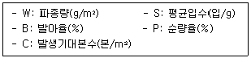
- W=B/(S×P×C)
- W=P/(S×B×C)
- W=S/(P×B×C)
- W=C/(P×B×S)
(정답률: 55%)
94. 야계사방 둑쌓기에서 계획홍수량이 200~500 m3/s인 경우 둑높이 여유고의 기준은?
- 0.6 m 이상
- 0.8 m 이상
- 1.0 m 이상
- 1.5 m 이상
(정답률: 24%)
95. 돌쌓기의 시공요령으로 옳지 않은 것은?
- 메쌓기의 기울기는 1 : 0.3 을 기준으로 한다.
- 돌쌓기에서 세로줄눈을 일직선으로 하는 통줄눈으로 한다.
- 찰쌓기를 할 때에는 물빼기 구멍을 반드시 설치하여야 한다.
- 돌의 배치에는 다섯에움 이상, 일곱에움 이하가 되도록 한다.
(정답률: 50%)
96. 폭 10 m, 높이 5 m인 직사각형 단면 야계수로에 수심 2 m, 평균유속 3 m/s로 유출이 일어날 때의 유량(m3/s)은?
- 15
- 30
- 60
- 150
(정답률: 54%)
97. 다음 설명에 해당하는 것은?
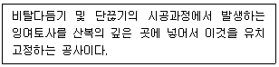
- 골막이
- 누구막이
- 땅속흙막이
- 산비탈흙막이
(정답률: 57%)
98. 다음 설명에 해당하는 것은?
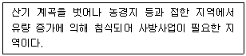
- 야계
- 밀린땅
- 붕괴지
- 황폐지
(정답률: 55%)
99. 야계사방의 공법으로만 올바르게 짝지어진 것은?
- 흙막이, 바닥막이
- 흙막이, 누구막이
- 기슭막이, 누구막이
- 기슭막이, 바닥막이
(정답률: 46%)
100. 평떼붙이기공법에 대한 설명으로 옳지 않은 것은?
- 주로 45° 이상의 급경사 지형에 시공한다.
- 떼를 붙이기 전에 흙다지기를 잘 해야 한다.
- 붙인 떼는 떼꽂이 등으로 고정하여 활착이 잘 이루어지게 한다.
- 심은 후에는 잘 밟아 다져 뗏밥을 주고 깨끗이 뒷정리를 한다.
(정답률: 64%)
따라서, 해가림을 해 주어야 할 수종으로는 높이가 낮은 나무들이 적합합니다. 주목과 소나무는 높이가 높아 해가림을 제대로 해 줄 수 없으므로 올바르지 않습니다.
반면에 전나무와 삼나무는 높이가 낮아 해가림을 제대로 해 줄 수 있으므로 올바른 선택입니다.
밤나무와 은행나무는 잎이 빽빽하여 해가림을 제대로 해 주지 못하므로 올바르지 않습니다.
마지막으로 벚나무와 아까시나무는 겨울철 잎이 떨어지기 때문에 해가림을 제대로 해 주지 못하므로 올바르지 않습니다.